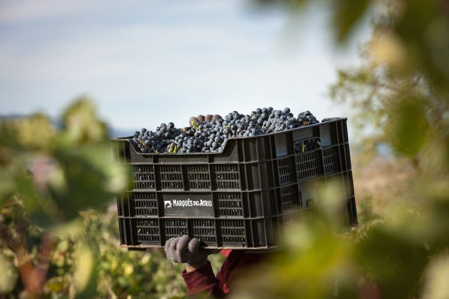
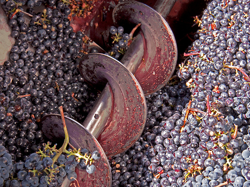
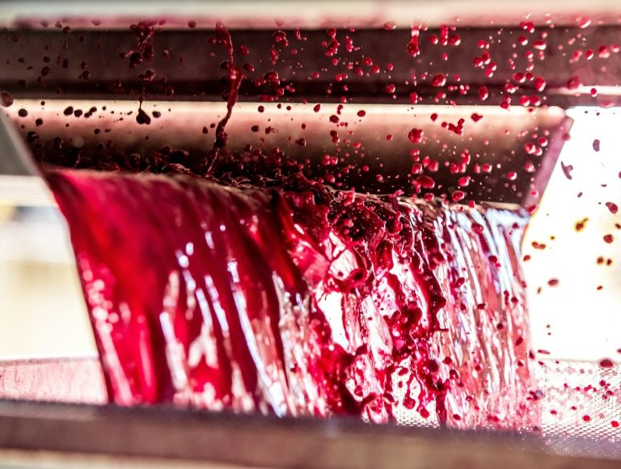
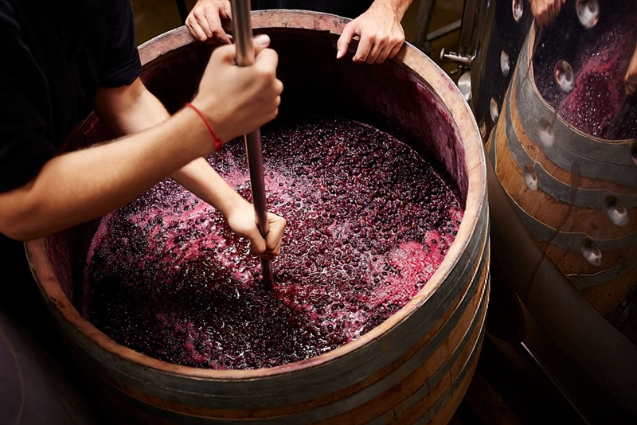
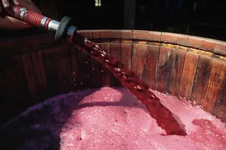
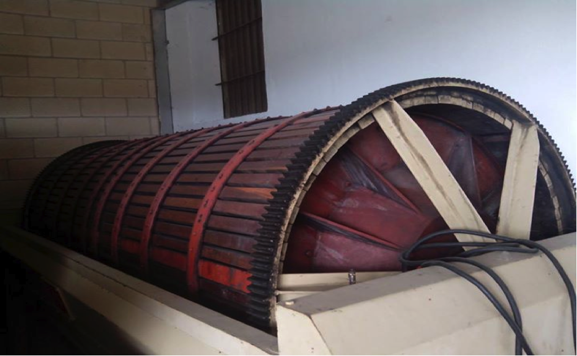
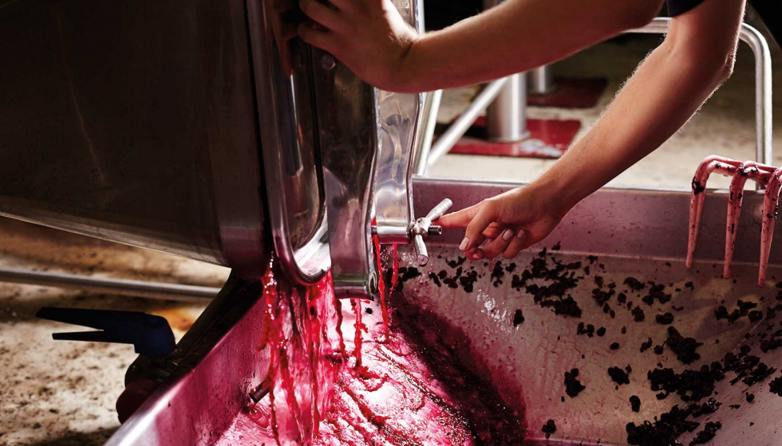
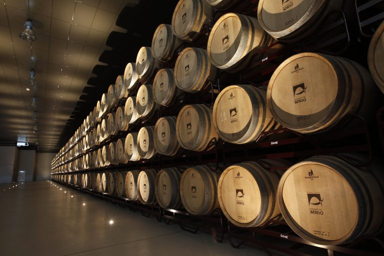
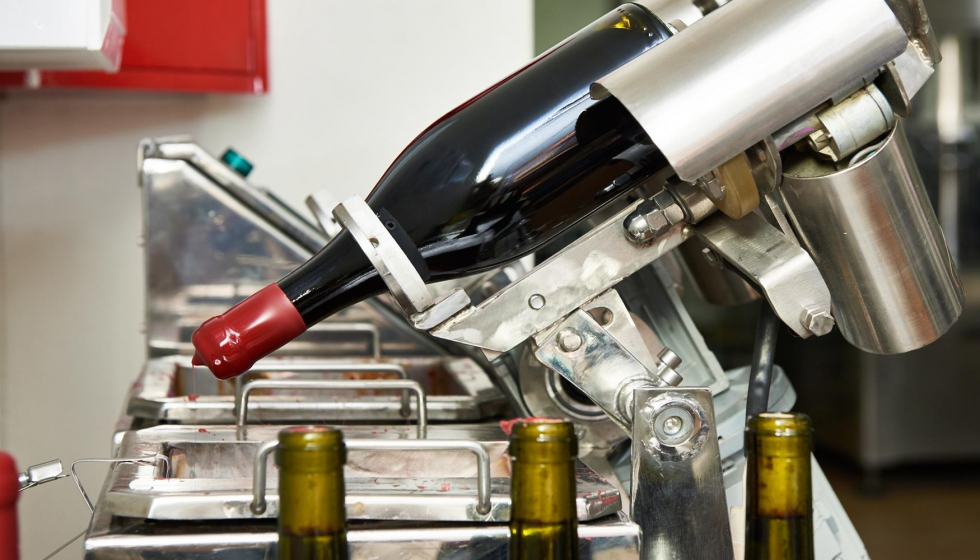

Este primer paso se refiere a la recolección de los racimos de uvas cuando alcanzan el nivel de maduración deseado.Para esto no hay una regla única, pues dependerá del azúcar presente en la fruta, que a su vez determina la intensidad de la fermentación y la cantidad de alcohol que tendrá la bebida. En la vendimia no solo se recogen los racimos del viñedo, sino que también se descartan aquellas uvas que estén en mal estado. De esta forma quedan solo frutos sanos que pasarán a la siguiente etapa.
Suele ser el primer proceso hecho en bodega y consiste en eliminar las ramas y hojas del racimo, dejando solo las uvas sueltas. Existe una alternativa al despalillado y es la maceración carbónica, en cuyo caso se utiliza el racimo completo. Este pasa directamente a la fermentación que se produce en espacios controlados con poca presencia de oxígeno y dura unos siete días. Sin embargo, los vinos realizados en este proceso son menos estables y no resisten largos periodos de añejamiento.
Esta etapa se lleva a cabo después del despalillado y en ella las uvas se pasan por una máquina que se encarga de romper la piel, y junto con la pulpa, obtener una mezcla pastosa llamada mosto. Aquí hay que tener especial cuidado para evitar triturar las semillas, ya que causan un sabor amargo.
El mosto obtenido se deja reposar por un periodo que va de una a dos semanas. En este tiempo la piel de la uva, llamada hollejo, se encarga de darle al vino tinto su tonalidad característica. También se pone en marcha el remontado, que consiste en remover constantemente el mosto para que toda la parte líquida se impregne con el sabor y el color del hollejo. Durante la maceración se produce la fermentación alcohólica, por la cual el azúcar de la fruta se convierte en alcohol gracias a la presencia de levaduras en la uva. En este tiempo se debe cuidar que la temperatura no exceda los 30o C para evitar que el proceso sea demasiado agresivo.
Consiste en trasladar el líquido a otro depósito en el que continúa con la fermentación alcohólica que ya se ha iniciado. Esta dura unas dos o tres semanas más y en ese tiempo es opcional continuar con el remontado. También está la alternativa de realizar un sangrado, proceso en el cual se extrae toda la parte líquida aprovechando la gravedad y la diferencia de densidades que deja a los sólidos flotando.
Es una fase extra que se aplica solo a la parte sólida resultante después del descube. Se pasa a través de una prensa mecánica que extrae el líquido que sigue presente, para obtener el llamado vino de prensa. Los residuos que quedan al finalizar el prensado se conocen como orujo y suelen destilarse. Un punto importante es que el vino de prensa y el vino que se obtiene después del descube no se mezclan, sino que cada uno continúa el proceso por separado.
Es una segunda fermentación a la que se somete el vino para transformar el ácido málico en ácido láctico. Tiene lugar de forma espontánea por las mismas bacterias presentes en la uva, pero se deben controlar las condiciones de temperatura y la duración. Este paso es muy importante porque el ácido málico tiene un mayor nivel de acidez que el láctico. Por esa razón, cuando termina esta fermentación el vino tinto adquiere un sabor más equilibrado y menos astringente al paladar.
Es una de las etapas más representativas de la elaboración del vino tinto, pues en ella la bebida se deja reposar en barricas de madera que han sido previamente tostadas. El tipo de madera, el nivel de tostado que tenga y el tiempo de crianza seguirán modificando las notas hasta dar con el resultado final. Durante la crianza se da un proceso llamado trasiego, que consiste en trasladar el vino de una barrica a otra para orearlo y eliminar residuos. También se lleva a cabo la clarificación, una especie de “limpieza” que arrastra las últimas partículas no deseadas que pudieran quedar en este punto y enturbiar la bebida.
Es el paso final y en él se introduce el vino en las botellas en las que saldrá al mercado. Con los vinos jóvenes la comercialización se realiza de forma inmediata, pero el resto aún tendrá un periodo de reposo llamado envejecimiento. Aquí el oxígeno que penetra a través del corcho seguirá modificando sutilmente sus propiedades hasta el momento de su consumo.
